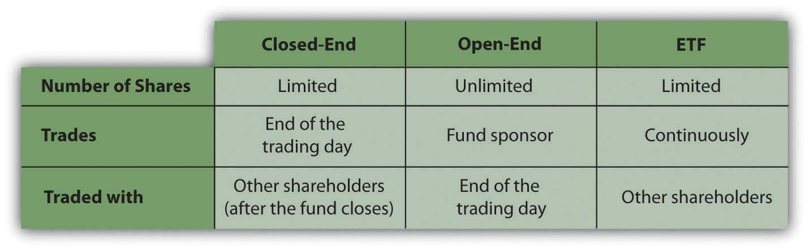
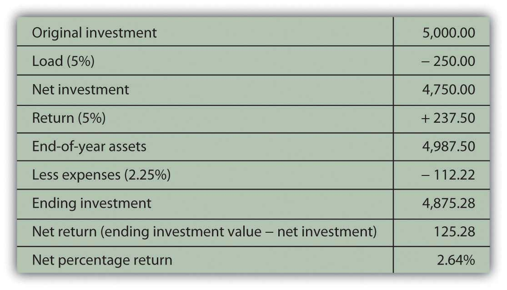

When people think of investing, they tend to think of stocks and bonds, investing in companies that create productivity, employment, and profit. Investments in stocks and bonds are ways of sharing in that profit and ultimately in economic growth.
While companies are the engines of economic growth, other assets such as real estate and commodities—natural resources or raw materials—fuel those engines. Increased market transparency and access, largely through the technologies of the Internet and global communications, have made it possible for more investors to invest in the “fuels” as well as the “engines” of commerce. Real estate and commodities investing have become increasingly popular as diversifiers for a sound investment portfolio.
Mutual funds are not another kind of asset but another way of investing in any kind of asset. The fund is a pool capable of much greater diversification than an individual’s investment portfolio, given transaction costs. A mutual fund can also provide security selection, expertise, liquidity, and convenience. Some funds are even designed to perform the asset allocation task for the investor. Mutual funds are fast becoming the dominant investment vehicle for individual investors, changing the role of the broker and financial advisor.
As defined in the Chapter 12 "Investing", a mutual fund is a portfolio of securities, consisting of one type of security or a combination of several different types. A fund serves as a convenient way for an investor to have a diversified portfolio of investments in just about any investable asset. The oldest mutual fund is believed to have been founded by Adriaan van Ketwich in 1774. Ketwich invited investors to contribute to a trust fund to spread the risk of investing in foreign bonds. The idea moved from the Netherlands to Scotland to the United States, where the Boston Personal Property Trust established the first mutual fund in 1893.FinanceScholar.com, http://www.financescholar.com/history-mutual-funds.html (accessed June 15, 2009).
The mutual fund’s popularity has grown in periods of economic expansion. At the height of the stock market boom in 1929, there were over seven hundred mutual funds in the United States. After 1934, mutual funds fell under the regulatory eye of the Securities and Exchange Commission (SEC), and it wasn’t until the 1950s that there were once again over one hundred mutual funds in the United States.
Mutual funds multiplied in the 1970s, spurred on by the creation of IRAs and 401(k) retirement plans, and again in the 1980s and 1990s, inspired by economic growth and the tech stock boom. By the end of 2008, U.S. mutual funds—which account for just over half of the global market—had $9.6 trillion in assets under management. Forty-five percent of all U.S. households owned mutual funds, compared to 6 percent in 1980. For 69 percent of those households, mutual funds were more than half of their financial assets.The Investment Company Institute, 2009 Investment Company Fact Book, 49th ed., 2009, http://www.ici.org/pdf/2009_factbook.pdf (accessed June 15, 2009). Mutual funds play a significant role in individual investment decisions.
A mutual fund provides an investor with cheaper and simpler diversification and security selection, requiring only one transaction to own a diversified portfolio (the mutual fund). By buying shares in the fund rather than individual securities, you achieve extensive diversification for a much lower transaction cost than by investing in individual securities and making individual transactions. You also receive the benefit of professional security selection, which theoretically minimizes the opportunity costs of lesser choices. So by using a mutual fund, you get more and better security selection and diversification.
A mutual fund also provides stock and bond issuers with a mass market. Rather than selling shares to investors individually (and incurring the costs of doing so), issuers can more easily find a market for their shares in mutual funds.
Like stocks and bonds, mutual funds may be actively or passively managed. As you read in Chapter 15 "Owning Stocks" and Chapter 16 "Owning Bonds", actively managed funds provide investors with professional management and the expected research, analysis, and watchfulness that goes with it. Passively managed index fundsA mutual fund designed to track the performance of an index for investors who seek diversification without having to select securities., on the other hand, are designed to mirror the performance of a specific index constructed to be representative of an asset class. Recall, for example, that the Standard & Poor’s (S&P) 500 Index is designed to mirror the performance of the five hundred largest large cap stocks in the United States.
Mutual funds are structured in three ways:
Closed-end fundsA mutual fund that issues a limited number of shares, so that existing shares must be sold to new investors. are funds for which a limited number of shares are issued. Once all shares have been issued, the fund is “closed” so a new investor can only buy shares from an existing investor. Since the shares are traded on an exchange, the limited supply of shares and the demand for them in that market directly determines the value of the shares for a closed-end fund.
Most mutual funds are open-end fundsA mutual fund in which shares are bought from and sold to the fund management; the number of shares is not limited. in which investors buy shares directly from the fund and redeem or sell shares back to the fund. The price of a share is its net asset value (NAV)When used regarding open-end mutual funds, NAV refers to the redeemable value of each fund share at that time, given the market value of the fund’s assets and the number of shares outstanding., or the market value of each share as determined by the fund’s assets and liabilities and the number of shares that exist. Here is the basic formula for calculating NAV:
NAV = (market value of fund securities − fund liabilities) ÷ number of shares outstanding.Demand for shares is reflected in the number of shares outstanding, because the fund can create new shares for new investors. NAV calculations are usually done once per day at the close of trading, when mutual fund transactions are recorded.
The NAV is the price that the fund will pay you when you redeem your shares, so it is a gauge of the shares’ value. It will increase if the market value of the securities in the fund increases faster than the number of new shares.
Exchange-traded funds (ETFs)A mutual fund that is structured as a closed-end fund and actively traded on an exchange. are structured like closed-end funds but are traded like stocks. Shares are traded and priced continuously throughout the day’s trading session, rather than once per day at the end of trading. ETFs trade more like individual securities; that is, if you are trying to time a market, they are a more nimble asset to trade than open-end or closed-end funds.
Originally designed as index funds, exchange-traded funds now target just about every asset, sector, and economic region imaginable. Because of this, ETFs have become quite popular, with over $529 billion invested in over seven hundred funds (as of April 2009).The Investment Company Institute, 2009 Investment Company Fact Book, 49th ed., 2009, http://www.ici.org/pdf/2009_factbook.pdf (accessed June 15, 2009). Figure 17.2 "Fund Features" compares the features of closed-end funds, open-end funds, and ETFs.
Figure 17.2 Fund Features
Shares of closed-end funds and exchange-traded funds are bought and sold on exchanges, much like shares of stock. You would go through a broker to make those transactions. Shares of open-end funds may be bought and sold directly from the fund sponsor, a mutual fund company or investment manager such as Fidelity, Vanguard, Janus, T. Rowe Price, or Teachers Insurance and Annuity Association-College Retirement Equities Fund (TIAA-CREF). You can make those transactions at any of the company’s offices, by telephone, or online. About 40 percent of all mutual fund transactions are done directly (without a broker) through a retirement plan contribution or a mutual fund company.The Investment Company Institute, 2009 Investment Company Fact Book, 49th ed., 2009, http://www.ici.org/pdf/2009_factbook.pdf (accessed June 15, 2009).
Some other types of mutual funds are shown in Table 17.1 "Other Types of Mutual Funds". Some research companies, such as Morningstar, track as many as forty-eight different categories of mutual funds.
Table 17.1 Other Types of Mutual Funds
| Funds of fundsA mutual fund that invests in shares of other mutual funds rather than in specific securties. | Mutual funds that own shares in other mutual funds rather than in specific securities. If you decide to use mutual funds rather than select securities, a fund of funds will provide expertise in choosing funds. |
| Lifestyle fundsA mutual fund designed to perform asset allocation and security selection for the investor. Assets are reallocated based on the firm’s expected liquidity target date. | Funds of stocks and bonds that manage portfolio risk based on age or the time horizon for liquidity needs. Lifestyle funds perform both security selection and asset allocation for investors, determined by the target date. For example, if you were now thirty years old, you might choose a lifestyle fund with a target date of thirty-five years from now for your retirement savings. As the fund approaches its target date, its allocation of investments in stocks and bonds will shift to carry less risk as the target nears. Lifestyle funds are used primarily in saving for retirement; many are created as funds of funds. |
| Leveraged fundsA mutual fund that invests borrowed funds as well as investors’ funds. | Funds that invest both investors’ money and money that the fund borrows to augment the investable assets and thus potential returns. Because they use borrowing, leveraged funds are riskier than funds that do not use leverage. |
| Inverse fundsA mutual fund that aims to increase in value when the market declines, in contrast to an index fund, which aim to increase in value when the market rises. | Funds that aim to increase in value when the market declines, to be countercyclical to index funds, which aim to increase in value when the market rises. Inverse funds, also called bear funds, are set up to perform contrary to the index. Since most economies become more productive over time, however, you can expect indexes to rise over time, so an inverse fund would make sense only as a very short-term investment. |
All funds must disclose their fees to potential investors: sales fees, management fees, and expenses. A load fundA mutual fund that charges a sales commission or fee upon investment or purchase of shares; the load is stated as a percentage of invested funds. charges a sales commission on each share purchase. That sales charge (also called a front-end loadThe sales charge for mutual fund shares, quoted as a percentage of the funds invested; it cannot be more than 8.5 percent of investment.) is a percentage of the purchase price. A no-load fundA mutual fund that does not charge a sales commission or fee upon investment or purchase of shares., in contrast, does not charge a sales commission, because shares may be purchased directly from the fund or through a discount broker. The front-end load can be as much as 8.5 percent, so if you plan to invest often or in large amounts, that can be a substantial charge. For example, a $5,000 investment may cost you $425, reducing the amount you have to invest and earn a return.
A fund may charge a back-end loadA deferred sales charge or sales fee charged when shares are redeemed., actually a deferred sales charge, paid when you sell your shares instead of when you buy them. The charge may be phased out if you own the shares for a specified length of time, however, usually five to seven years.
A fund may charge a management fee on an annual basis. The management fee is stated as a fixed percentage of the fund’s asset value per share. Management fees can range from 0.1 percent to 2.0 percent annually. Typically, a more actively managed fund can be expected to charge a higher management fee, while a passively managed fund such as an index fund should charge a minimal management fee.
A fund may charge an annual 12b-1 feeAn annual management fee charged to mutual fund shareholders and calculated as a percentage of the assets under management. or distribution fee, also calculated as not more than 1.0 percent per year of the fund’s asset value. Some mutual funds charge other extra fees as well, passing on fund expenses to shareholders. You should consider fee structure and rate when choosing mutual funds, and this can be done through calculations of the expense ratio.
Taken together, the annual management, distribution, and expense fees are measured by the expense ratioThe total expenses of a mutual fund investment as a percentage of share value.—the total annual fees expressed as a percentage of your total investment. The expense ratio averages around 0.99 percent for all mutual funds, but it may be more than 2 percent of your investment’s value.The Investment Company Institute, 2009 Investment Company Fact Book, 49th ed., 2009, http://www.ici.org/pdf/2009_factbook.pdf (accessed June 15, 2009). That may not sound like much, but it means that if the fund earns a 5 percent return, your net return may be less than 3 percent (and after taxes, it’s even less). When choosing a fund, you should be aware of all charges—especially annual or ongoing charges—that can affect your investment return.
Say you invest in a load fund with a 5 percent front-end load and an expense ratio of 2.25 percent and suppose the fund earns a 5 percent return. Figure 17.3 "Mutual Fund Example" shows how your $5,000 investment would look after one year.
Figure 17.3 Mutual Fund Example
Expenses can be a significant determinant of your net return, and since expenses vary by fund, fund strategy (active or passive), and fund sponsor, you should shop around and understand what your costs of investing will be.
Owning shares of a mutual fund means owning shares in a pool of assets. The returns of the fund are the returns of those assets: interest, dividends, or gains (losses). Income may come from interest distributionsMutual fund returns from any interest payments on the mutual fund holdings, such as bonds if the fund invests in bonds or interest-producing assets or as dividend distributionsMutual fund returns from any dividends distributed by mutual fund equity holdings. if the fund invests in stocks.
Mutual funds buy and sell or “turn over” the fund assets. Even passively managed funds need to rebalance to keep pace with their benchmarks as market values change. The turnover ratioA measure of how much annual trading activity there is within a mutual fund’s holdings. is the percentage of fund assets that have been turned over or replaced in the past year, a measure of the fund’s trading activity.
Turnover can create capital gains or losses. Periodically, usually once per year, the fund’s net capital gains (or losses) are distributed on a per share basis as a capital gains distributionThe shareholder’s share of capital gains (losses) created by mutual fund turnover.. You would expect turnover to produce more gains than losses. The more turnover, or the higher the turnover ratio, the greater the capital gains distributions you may expect.
Unless you have invested in a tax-exempt savings plan such as an Individual Retirement Account (IRA) or a 401(k), interest and dividend distributions are taxable as personal income, as are capital gains, including capital gains distributions. A higher turnover ratio may mean a higher tax expense for capital gains distributions. Most open-end mutual funds allow you the option of having your income and gains distributions automatically reinvested rather than paid out, which means that you may be paying taxes on earnings without ever “seeing” the money.
All mutual fund companies must offer a prospectusA written statement of a mutual fund’s structure, management, investment objectives, holdings, and historic and current performance; funds are required to make the prospectus available to all potential investors., a published statement detailing the fund’s assets, liabilities, management personnel, and performance record. You should always take the time to read it and to take a closer look at the fund’s investments to make sure that the fund will be compatible and appropriate to your investment goals.
For example, suppose you have an investment in an S&P 500 Index fund and now are looking for a global stock fund to complement and diversify your holdings in domestic (U.S.) equities. You go to the Web site of a large mutual fund company offering hundreds of funds. You find a stock fund called “Global Stock Fund”—sounds like it’s just what you are looking for. Looking closer, however, you can see that this fund is invested in the stocks of companies in Germany, Japan, and the United Kingdom. While they are not U.S. stocks, those economies are similar to the U.S. economy, perhaps too similar to provide the diversity you are looking for.
Or suppose you are looking for a bond fund to create income and security. You find a fund called the “Investment Grade Fixed Income Fund.” On closer inspection, however, you find that the fund does not invest only in investment grade bonds but that the average rating of its bonds is investment grade. This means that the fund invests in many investment grade bonds but also in some speculative grade bonds to achieve higher income. While this fund may suit your need for income, it may not be appropriate for your risk tolerance.
Mutual fund companies make this information readily available on Web sites and in prospectuses. You should always make the extra effort to be sure you know what’s in your fund. In addition, mutual funds are widely followed by many performance analysts. Ratings agencies such as Morningstar and investment publications such as Barron’s and Forbes track, analyze, and report the performance of mutual funds. That information is available online or in print and provides comparisons of mutual funds that you may find helpful in choosing your fund.
In print and online newspapers, mutual fund performance is reported daily in the form of tables that compare the average returns of funds from week to week. Reported average returns are based on the net asset value per share (NAVPS). Investors can use this information to choose or compare funds and track the performance of funds they own.
In conclusion, since a mutual fund may be made up of any kind or many kinds of securities (e.g., stocks, bonds, real estate, and commodities), it is not really another kind of investment. Rather, it is a way to invest without specifically selecting securities, a way of achieving a desired asset allocation without choosing individual assets.
The advantages of investing in a mutual fund are the diversification available with minimal transaction costs and the professional management or security selection that you buy when you buy into the fund.
Compared to actively managed funds, passively managed or index funds offer similar diversification but with lower management fees and expense ratios because you aren’t paying for market timing or security selection skills. The turnover ratio shows how passive or active the fund management is. About half of all equity mutual funds have a turnover ratio of less than 50 percent.The Investment Company Institute, 2009 Investment Company Fact Book, 49th ed., 2009, http://www.ici.org/pdf/2009_factbook.pdf (accessed June 15, 2009).
Performance history has shown that actively managed funds, on average, do not necessarily outperform passively managed funds.Burton G. Malkiel, A Random Walk Down Wall Street (New York: W. W. Norton & Company, Inc., 2007), 360. Since they usually have higher fees, any advantage created by active management is usually canceled out by their higher costs. Still, there are investors who believe that some mutual funds and mutual fund managers can, on average, outperform the markets or the indexes that provide the benchmarks for passively managed funds.
Mutual funds provide investors with
Mutual funds may be structured as
Some funds are structured to achieve specific investment goals:
Mutual fund costs may include
Fees vary by
Returns from a mutual fund include returns on the securities it owns, including
When you buy a home, even with a mortgage, you are making a direct investmentA real estate investment in which you are the owner and manager of property., because you are both the investor and the owner who holds legal title to the property. For most people, a home is the single largest investment they ever make.
As an investor, you may want to include other real estate holdings in your portfolio, most likely as an indirect investmentA real estate investment in which you buy shares of an entity that owns and manages property. in which you invest in an entity that owns and manages real estate. Studies have shown that real estate is a good diversifier for financial investments such as stocks and bonds.Jack Clark Francis and Roger G. Ibbotson, Contrasting Real Estate with Comparable Investments, 1978–2004 (Ibbotson Associates, 2007), http://corporate.morningstar.com/ib/asp/detail.aspx?xmlfile=1409.xml (accessed June 24, 2009).
Sonia is looking to buy her first home. After graduating from college, she decided to stay on because she liked the town and found a job as an elementary school teacher. She loves her job, but her income is limited. She finds a nice, two-family house in a neighborhood close to the college. It needs some work, but she figures she can use the summer months to fix it up—she’s pretty handy—and renting to students won’t be a problem. The tenants will pay their own utilities. Sonia figures that the rental income will help pay her mortgage, insurance, and taxes, and that after the mortgage is paid off, it will provide a nice extra income.
Many real estate investors begin like Sonia, buying a rental property that helps them to afford their own home. If you actively manage the rental property, there are tax benefits as well. Of course, you have to provide maintenance services and arrange for repairs, and, in Sonia’s case, perhaps give up a bit of privacy. A second or vacation home can be used as a rental property as well, although the tax benefits are less assured. In both cases, the investor is making a direct investment in the property.
The advantages to a direct investment are the additional rental income and tax benefits. The disadvantages are that real estate is relatively illiquid, and the investment concentrates your portfolio in one asset class—residential real estate. Conventional wisdom was that real estate was a good hedge against inflation, but the recent burst of the housing bubble—not only in the United States but also worldwide—has cast a shadow on that thinking. Also, to realize the tax benefits, you must actively manage the rental property, and being a landlord is not for everyone.
Other direct real estate investments include commercial propertyProperty used exclusively to create rental income., or property exclusively for rent, and undeveloped land. Developers buy property or land and seek to profit from quickly improving and reselling it. Both are more speculative investments, especially if purchased with debt financing. They may also prove to be illiquid and to concentrate assets, making them inappropriate investments for investors without a large and diversified portfolio.
Investors who want to add a real estate investment to their portfolio more often make an indirect investment. That is, they buy shares in an entity or group that owns and manages property. For example, they may become limited partners in a real estate syndicate.
A syndicateA group of individuals formed to own property. The syndicate acts as a vehicle for indirect investment, hiring professional management for the properties it owns. is a group created to buy and manage commercial property such as an apartment, office building, or shopping mall. The syndicate may be structured as a corporation or, more commonly, as a limited partnership.
In a limited partnershipA partnership in which there are both general and limited partners (at least one of each). The limited partners have limited liability, and, much like corporate shareholders, cannot be liable for the partnership beyond their original investment., there is a general partner and limited partners. The general partner manages the entity, while the limited partners invest in partnership shares. The limited partners are only liable for the amount of their investment; that is, they can lose only as much as they have put in. Limiting liability is particularly important in real estate, which relies on leverage or debt financing. Investors find syndicates valuable in limiting liability and in providing management for the property.
Another form of indirect investing is a real estate investment trust (REIT)A corporation investing in real estate that, practically, behaves much like a mutual fund for real estate investors.—a mutual fund of real estate holdings. You buy shares in the REIT, which may be privately held or publicly traded on an exchange. The REIT is a fund invested in various commercial properties. Some REITs specialize, concentrating investments in specific kinds of property, such as shopping malls, apartments, or vacation properties.
To qualify as a REIT in the United States (for the allowable tax benefits), a fund must
An equity REIT invests in property, while a mortgage REIT provides real estate financing. A hybrid REIT does both. REITs do for real estate what mutual funds do for other assets. They provide investors with a way to invest with more liquidity and diversity and with comparatively lower transaction costs.
Another way to invest in the real estate market is to invest in the real estate financing rather than the actual real estate. Mortgage-backed securities (MBS)A security such as a bond whose return is secured by the income (mortgage payments) from a pool of mortgages. are bonds secured by pools of mortgages owned by large financial institutions or agencies of the federal government.
It is difficult to price mortgage-backed securities—to gauge their present and future value and their risk. Like any bond, mortgage-backed securities are vulnerable to interest rate, reinvestment, and inflation risk, but they are also particularly vulnerable to economic cycles and to default risk. If the economy is in a recession and unemployment rises, mortgage defaults will likely rise. When mortgage defaults rise, and the value of mortgage-backed securities falls.
Because they are complicated and risky, mortgage-backed securities are appropriate only for investors with a large enough asset base and risk tolerance to support the investment. MBS investors are usually institutional investors or very wealthy individuals.
Indirect investments may be structured as
A REIT is designed as a mutual fund of real estate holdings.
Some investors prefer to invest directly in the materials that are critical to an industry or market, rather than investing in the companies that use them. For example, if you think that the price of oil is going to rise, one way to profit from the higher price would be to buy shares of oil companies that profit by refining oil and selling gasoline, fuels, and other petroleum products. Another way is to buy the oil itself as a commodity.
Commodities are raw materials—agricultural products, metals, energy sources, currencies, and so on—that go into producing goods and services. Investing in commodities is a way to profit directly from the raw material rather than from its products. As discussed in Chapter 12 "Investing", commodities trading is not new—the first commodities exchange in the United States was established in 1848.
Because they are or rely on natural resources, commodities have a largely unpredictable supply. They have inherent risk, because they are exposed to changes in weather or geology or global politics. Commodities trading began as a way for commodity producers and consumers to manage their risks. These traders are managing risks going forward; that is, they hedge by buying and selling commodities that they expect to exist in the future. This trading is done using future and forward contracts—types of derivatives, discussed in the Chapter 12 "Investing".
Investing in commodities involves transaction costs and a time limit on realizing your gains (or losses), because derivatives are time-sensitive contracts created with an expiration date.
Commodity investing is risky business, because it is done through derivatives—assets whose value depends on the value of another asset. For instance, the value of a contract to buy or sell soybeans at some time in the future depends on the value of the soybeans. When you invest in a derivative, you are taking on the risk of both contract and the asset that it depends on. One strategy to manage this risk is to invest in both, creating a situation in which one investment can act as a hedge for the other. The way this works is if the underlying asset (the soybeans) gains value, you’ll lose on the derivative (the futures contract on soybeans); but if the asset loses value, you can gain on the derivative.
One example of this is the “prebuy” offer common in regions where homes are heated by oil. When you heat your home with oil, you are exposed to the risk of volatility in the price of oil. This volatility can upset your household budget and, since heat is a necessity, can take away from your other spending needs. You could guarantee your winter’s cost of oil by buying it all in the summer, but you would need a huge oil tank to store all that oil until winter. As an alternative and to attract customers, some heating oil suppliers offer a prebuy deal. During the summer, customers can buy their winter’s supply of oil at a set price, and the oil company will then deliver it as needed over the winter months.
If the price of oil goes up, the customer is protected and gains by not having to pay the higher price. The oil dealer loses the extra profit it could have had. On the other hand, if the price of oil goes down, the dealer is assured its profit, while the customer pays more than necessary without the prebuy deal.
In the language of commodities trading, the customer is “short” oil, that is, needs it and seeks to lock in a price through the prebuy deal. The oil dealer is “long” oil, that is, has a supply and wants to sell it and so seeks to lock in the sale of a certain quantity at a certain price. The customer wants to lock in a low price, while the dealer wants to lock in a high price. Each is betting on what will be “low” and “high” relative to what the real price of oil turns out to be in the future. The hedge of the prebuy deal relieves both the customer and the dealer of the uncertainty or risk. The deal creates its own risks, but if those are smaller than the risk of oil’s price volatility, then the dealer will offer the prebuy, and the customer will take it.
When you trade commodities, you are also exposed to the risks of trading in the commodities markets. Another reason that commodities investing is risky for individual investors is because professional commodity investors often take speculative positions, betting on the future price of derivatives without holding investments in the underlying assets. Speculators can influence that future price, which after all is just the market’s consensus of what that price “should” be. For individual investors, the risks of commodities trading often outweigh the advantage of whatever diversification they bring to the portfolio.
Historically, gold and silver have been popular investments of individual investors. For thousands of years, gold and silver have been used as a basis for currency value, either minted into coins or used to back currency value. When a currency is backed by gold, for example, or is “on the gold standard,” there should be a direct relationship between the value of the currency and the value of the gold.
In times of inflation or deflation, investors worry that the value or purchasing power of currency will change. They may invest in gold or silver as a more stable store of wealth than the currency that is supposed to represent the metal. In other words, if investors lose faith in the currency that represents the gold, they may trade their money for the gold.
Most currencies used today are not backed by a precious metal but by the productivity and soundness of the economy that issues them. For example, the value of the U.S. dollar is not related to the value of an ounce of gold, but to the value of the U.S. economy.
When economic or political turmoil seems to threaten the health of an economy and hence the value of its currency, some investors choose to invest in the gold or silver that seems to retain its value. For that reason, gold or silver has historically been regarded as a hedge against inflation.
How exactly do you buy gold? Gold bullion is sold as bars or wafers in units of one kilogram or 32.15 troy ounces. Metal dealers and some banks will sell bars or wafers ranging from 5 grams (or 0.16075 troy ounces) to 500 ounces or more. Transaction costs are relatively high, between 5 percent and 8 percent, and there is the cost of storing and securing the gold bars or wafers.
A more popular way to buy gold is as coins, which are more easily stored and secured. Gold coins are minted by several countries, including the United States, and may be bought from banks, brokers, and dealers for a fee of about 2 percent.
As with stocks, bonds, and real estate, the most popular way for individual investors to invest in any commodities—including precious metals—is through open-end mutual funds or exchange-traded funds (ETF). The fund may invest in a variety of contracts, diversifying its holdings of the commodity. It has professional managers who understand the pricing of such contracts and can research the market volatility and the global economy. Using a fund as a way of investing in commodities thus provides both diversification and expertise. It can also give you more liquidity as fund shares can be quickly traded into the market.
For example, if you expect inflation and want to buy gold, instead of trying to buy gold bars, you could invest in a fund (iShares), an exchange-traded fund (Comex Gold), or mutual funds (Fidelity Select Gold or Vanguard Precious Metals). These funds allow you to “own” gold but also to get diversification, expertise, and liquidity, reducing your risk.
There are mutual funds or exchange-traded funds for nearly every commodity that is traded. There are also passively managed commodity index funds, similar to stock or bond index funds. Investing in commodities can be a way to achieve asset diversification in your portfolio, because often a commodity such as gold is countercyclical to the economy, and therefore is countercyclical to your stock and bond holdings as well. Commodities may also add significant risk to a portfolio, however, so the advantage of adding them as a diversification strategy may be canceled out by the additional risk.
Any asset that is tradable may become an investment; that is, it may be purchased and held with the expectation that it can be sold when its value increases. So long as there is a market for it—a buyer—it potentially may be sold at a gain.
Collectibles and unique investments include the following:
As investments, collectibles cannot be standardized in the way that stocks, bonds, or even real estate and used cars can be. Each asset has attributes that make it more or less valuable, even among similar assets. Its value is hard to judge, and therefore it is harder for buyer and seller to agree on a price.
Professional appraisers are knowledgeable about both the item and the market and are trained to evaluate such assets. Theirs is a better-educated guess, but it is still just an estimate of value. Individual investors also consult books on collectibles and may purchase professional market research, pricing indexes, and auction records.
Sometimes one person’s trash is another person’s treasure. It is fun to think that you may unearth a rare “find” at a garage sale or flea market or that some family heirloom has more than sentimental value. Usually, however, your ability to cash in on your luck is limited by your ability to convince someone else of its worth and to sell when its market is trendy.
Collectibles, including “ephemera” such as antique letters and photographs, are usually sold by dealers or collectors or through a private sale arranged between buyer and seller. The dealers may establish a gallery to showcase items for sale. Auction houses such as Christie’s or Sotheby’s organize auctions of many items or “lots” to attract buyers and provide catalogues with details on the items for sale, such as their “provenance” or ownership history.
The advantage of unique assets as investments is that you may enjoy collecting and having the items as well as watching their value appreciate. If you are a guitarist, for example, having and being able to play a vintage guitar may mean more to you than the fact that it may be a good investment. For some, collecting becomes a hobby.
The disadvantages of investing in collectibles are
Unless you are knowledgeable about your item and its markets (and even if you are), it is common to suffer from mispricing. Collectibles’ markets are relatively inefficient because trading partners vary widely in their knowledge about pricing. Both buyers and sellers try to persuade each other of an asset’s rarity and value. It is easy to be misled and to make mistakes in this market. Online sales and auctions of collectibles at sites such as eBay may be fun for hobbyists, but they typically are not good venues for investors.
If you are trading through a dealer, you can check the dealer’s reputation through professional organizations, local business bureaus, and Internet blogs and Web sites, especially where customers can provide a rating or critique. You should also always try to find comparable items to compare prices. If feasible, get a second opinion from an independent appraiser. Knowledge is an important bargaining chip. The more you know, the more likely you are to be satisfied with your investment decision, even if you ultimately walk away from the deal.
Unique investments may not be readily saleable, or their markets may be subject to trends and fashions that cause price volatility. This means that your investment may ultimately be a source of gain but that you cannot count on it as a source of liquidity. If you have foreseeable liquidity needs, it may not be appropriate to tie up your wealth in a Chinese vase, autographed baseballs, vintage action figures, or Navajo rugs.
There are no dividends or interest paid while you hold collectibles, so if you have income needs you should choose a more useful investment. There are also other costs, such as storage, security, maintenance, and insurance. Your investment actually returns a negative net cash flow—costs you more than it brings in—until you realize its potential gain by selling it.
Collectibles can be a source of joy and a store of wealth, and you may realize a healthy return on your investment. In the meantime, however, they create costs so that your eventual return will have to be large enough to compensate for those costs to make them a really worthwhile investment.
Collectibles and unique assets may appreciate in value, acting as a store of wealth, but the disadvantages of using them as investments are